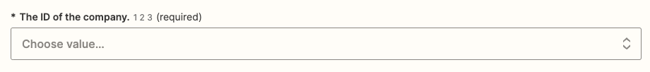
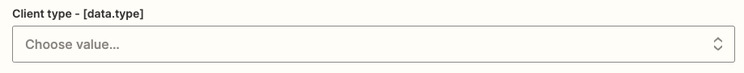
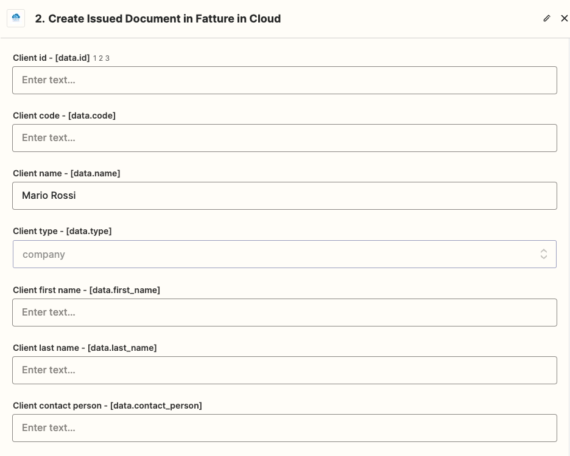

Client creation
import Tabs from "@theme/Tabs"; import TabItem from "@theme/TabItem";
In this guide, you will learn how to successfully create Clients and Suppliers from scratch. We'll build the request step by step, so wait until the end of the guide to send your first request!
You can find the technical documentation of this API method in the Create Client section of the API Reference.
:::note Client and Supplier The models for Clients and Suppliers differ only for a small subset of parameters; this guide will show in detail how to create a new Client, but it can be used in both cases. In the Suppliers case, you will need to use the Create Supplier method. :::
:::tip Retrieve your Company ID!
In this example, we'll suppose you have to manage just one Company, so we simply inserted its ID directly in the code. If instead, you need to be able to manage multiple companies, you'll need to retrieve the ID of the current company in some way. Check the Company-scoped Methods page for more info.
:::
:::warning Are you using Zapier?
Zapier Actions provide all the fields offered by the APIs, but it does not mean you need to compile all of them! For example, while creating a new Client the Document ID must be left blank!
To follow this guide, you will be required to search the fields used in our example on the Zapier page and insert the related values.
The code of the fields will follow the JSON structure: for example, the "type" field is included in the "data" object, so the Zapier code will be "data.type". You can use the CRTL + F command to search the field's code faster 
In this example, we'll insert the values directly, but please remember that Zapier was built to let you select the workflow's previous steps' outputs as input in the Action, for example selecting the values returned by a trigger!
:::
 Step Zero: The Client Type
Step Zero: The Client Type
TSE in Cloud lets you to define four different types of clients.
The available types are:
- company: in an electronic document Denominazione will be automatically set
- person: in an electronic document Nome and Cognome will be automatically set
- pa: in an electronic document the flag Pubblica Amministrazione and Split payment will be automatically set
- condo
In the next step we'll suppose to create a company, but the procedure is the same for the other clients types too.
 Step One: The Client Data
Step One: The Client Data
Every Client can be defined by a set of basic values, here you can find a list of the main ones:
-
name: [required] the client denomination.
-
vat_number: the client P.IVA.
-
tax_code: the client codice fiscale.
-
code: your internal client code.
-
ei_code: client SDI code.
-
email: the client email.
-
certified_email: the client PEC.
-
phone: the client's phone number.
-
address_*: the client address fields.
-
notes: the client extra notes.
-
country: optional client country (eg. Repubblica Ceca).
-
country_iso: optional client country ISO-3166 (eg. CZ).
The partial request looks like this:
// NOTE: this is a partial request, please wait before sending it
{
"data": {
"type": "company",
"name": "Mario Rossi",
"vat_number": "47803200154",
"tax_code": "RSSMRA91M20B967Q",
"address_street": "Via Italia, 66",
"address_postal_code": "20900",
"address_city": "Milano",
"address_province": "MI"
}
}
The corresponding code with our SDKs:
// NOTE: this is a partial request, please wait before sending it
// in this example we are using our C# SDK
// https://www.nuget.org/packages/It.FattureInCloud.Sdk/
ModelClient entity = new ModelClient(
type: ClientType.Company,
name: "Mario Rossi",
vatNumber: "47803200154",
taxCode: "RSSMRA91M20B967Q",
addressStreet: "Via Italia, 66",
addressPostalCode: "20900",
addressCity: "Milano",
addressProvince: "MI"
);
// NOTE: this is a partial request, please wait before sending it
// in this example we are using our Go SDK
// https://github.com/fattureincloud/fattureincloud-go-sdk
entity := *fattureincloud.NewClient().
SetType(fattureincloud.ClientTypes.COMPANY).
SetName("Mario Rossi").
SetVatNumber("47803200154").
SetTaxCode("RSSMRA91M20B967Q").
SetAddressStreet("Via Italia, 66").
SetAddressPostalCode("20900").
SetAddressCity("Milano").
SetAddressProvince("MI")
// NOTE: this is a partial request, please wait before sending it
// in this example we are using our Java SDK
// https://search.maven.org/artifact/it.fattureincloud/fattureincloud-java-sdk
Client entity = new Client()
.type(ClientType.COMPANY)
.name("Mario Rossi")
.vatNumber("47803200154")
.taxCode("RSSMRA91M20B967Q")
.addressStreet("Via Italia, 66")
.addressPostalCode("20900")
.addressCity("Milano")
.addressProvince("MI");
// NOTE: this is a partial request, please wait before sending it
// in this example we are using our PHP SDK
// https://packagist.org/packages/fattureincloud/fattureincloud-php-sdk
$entity = new Client;
$entity
->setType(ClientType::COMPANY)
->setName("Mario Rossi")
->setVatNumber("47803200154")
->setTaxCode("RSSMRA91M20B967Q")
->setAddressStreet("Via Italia, 66")
->setAddressPostalCode("20900")
->setAddressCity("Milano")
->setAddressProvince("MI");
// NOTE: this is a partial request, please wait before sending it
// in this example we are using our JS SDK
// https://www.npmjs.com/package/@fattureincloud/fattureincloud-js-sdk
let entity = new fattureInCloudSdk.Client();
entity.type = new fattureInCloudSdk.ClientType().company;
entity.name = "Mario Rossi";
entity.vat_number = "47803200154";
entity.tax_code = "RSSMRA91M20B967Q";
entity.address_street = "Via Italia, 66";
entity.address_postal_code = "20900";
entity.address_city = "Milano";
entity.address_province = "MI";
# NOTE: this is a partial request, please wait before sending it
# in this example we are using our Python SDK
# https://pypi.org/project/fattureincloud-python-sdk/
entity = Client(
type = ClientType("company"),
name="Mario Rossi",
vat_number="47803200154",
tax_code="RSSMRA91M20B967Q",
address_street="Via Italia, 66",
address_postal_code="20900",
address_city="Milano",
address_province="MI"
)
# NOTE: this is a partial request, please wait before sending it
# in this example we are using our Ruby SDK
# https://rubygems.org/gems/fattureincloud_ruby_sdk
entity = FattureInCloud_Ruby_Sdk::Client.new(
type: FattureInCloud_Ruby_Sdk::ClientType::COMPANY,
name: "Mario Rossi",
vat_number: "47803200154",
tax_code: "RSSMRA91M20B967Q",
address_street: "Via Italia, 66",
address_postal_code: "20900",
address_city: "Milano",
address_province: "MI"
)
// NOTE: this is a partial request, please wait before sending it
// in this example we are using our TS SDK
// https://www.npmjs.com/package/@fattureincloud/fattureincloud-ts-sdk
let entity: Client = {};
entity.type = ClientType.Company;
entity.name = "Mario Rossi";
entity.vat_number = "47803200154";
entity.tax_code = "RSSMRA91M20B967Q";
entity.address_street = "Via Italia, 66";
entity.address_postal_code = "20900";
entity.address_city = "Milano";
entity.address_province = "MI";
In Zapier, first, you need to select your Company ID. Luckily, our Actions let you select it from a simple dropdown menu. 
Next, you must set the Client Type we described in the previous step, you just need to select the correct value in the available list.

Then you must set up the request as explained above. The fields' codes start with the "data" prefix.
Remember: in this example, you must insert values only in the fields we are suggesting to you! In the image below we can't show all the fields you must fill, so you must search them all as shown before.  Here you can find the list of all the fields and values you must fill for this example:
| Field Name | Field Code | Value | Notes |
|---|---|---|---|
| The ID of the company | - | 12345 | Select it from the dropdown menu |
| Client type | data.type | company | |
| Client Name | data.name | Mario Rossi | |
| Client vat number | data.vat_number | 47803200154 | |
| Client tax code | data.tax_code | RSSMRA91M20B967Q | |
| Client address street | data.address_street | Via Italia, 66 | |
| Client address postal code | data.address_postal_code | 20900 | |
| Client address city | data.address_city | Milano | |
| Client address province | data.address_province | MI |
 Step Two: Advanced Options
Step Two: Advanced Options
In addition to the basic data explained in the previous step, some advanced fields can be used:
-
default_*: all the default fields will not be set automatically when creating a document, however, you can save the defaults, retrieve them before creating the document and insert them with the other fields when creating a document.
-
bank_*: client bank details.
-
has_intent_declaration: flag that adds Lettera d'intento fields to the electronic document, intent_declaration_protocol_number and intent_declaration_protocol_date also need to be set.
 Client uniqueness
Client uniqueness
We have strong checks to ensure clients' uniqueness. The applied rule differs based on the defined fields:
- if you are only setting the client's name, then you will receive an error if a client with the same name already exists.
- if you are setting code, vat_number, and tax_code, these values must be unique for all your clients.
 Create the client!
Create the client!
Now we are ready to create a client, so let's create a client using the request we just built:
POST /c/1235/entities/clients HTTP/1.1
Accept: application/json
Content-Type: application/json
Host: api-v2.fattureincloud.it
Content-Length: 200
{"data":{"name":"Mario Rossi","vat_number":"47803200154","tax_code":"RSSMRA91M20B967Q","address_street":"Via Italia, 66","address_postal_code":"20900","address_city":"Milano","address_province":"MI"}}
The corresponding code with our SDKs:
using System;
using System.Collections.Generic;
using It.FattureInCloud.Sdk.Api;
using It.FattureInCloud.Sdk.Client;
using It.FattureInCloud.Sdk.Model;
namespace test {
class Program {
static void Main(string[] args) {
Configuration config = new Configuration();
//set your access token
config.AccessToken = "YOUR_ACCESS_TOKEN";
var apiInstance = new ClientsApi(config);
//set your company id
var companyId = 12345;
// NOTE: this is a complete request, but please customize it!!!
// In the next step we'll explain how to perform the request to the API.
// in this example we are using our C# SDK
// https://www.nuget.org/packages/It.FattureInCloud.Sdk/
ModelClient entity = new ModelClient(
type: ClientType.Company,
name: "Mario Rossi",
vatNumber: "47803200154",
taxCode: "RSSMRA91M20B967Q",
addressStreet: "Via Italia, 66",
addressPostalCode: "20900",
addressCity: "Milano",
addressProvince: "MI"
);
// Here we put our entity in the request object
CreateClientRequest createClientRequest = new CreateClientRequest(
data: entity
);
// Now we are all set for the final call
// Create the client: https://github.com/fattureincloud/fattureincloud-csharp-sdk/blob/master/docs/ClientsApi.md#createclient
try {
CreateClientResponse result = apiInstance.CreateClient(companyId, createClientRequest);
Console.WriteLine(result);
} catch (ApiException e) {
Console.WriteLine("Exception when calling ClientsApi.CreateClient: " + e.Message);
Console.WriteLine("Status Code: " + e.ErrorCode);
Console.WriteLine(e.StackTrace);
}
}
}
}
// NOTE: this is a complete request, but please customize it!!!
// In the next step we'll explain how to perform the request to the API.
// in this example we are using our Go SDK
// https://github.com/fattureincloud/fattureincloud-go-sdk
package main
import (
"context"
"encoding/json"
"fmt"
"os"
fattureincloudapi "github.com/fattureincloud/fattureincloud-go-sdk/v2/api"
fattureincloud "github.com/fattureincloud/fattureincloud-go-sdk/v2/model"
)
func main() {
//set your access token
auth := context.WithValue(context.Background(), fattureincloudapi.ContextAccessToken, "YOUR_ACCESS_TOKEN")
configuration := fattureincloudapi.NewConfiguration()
apiClient := fattureincloudapi.NewAPIClient(configuration)
//set your company id
companyId := int32(12345)
entity := *fattureincloud.NewClient().
SetType(fattureincloud.ClientTypes.COMPANY).
SetName("Mario Rossi").
SetVatNumber("47803200154").
SetTaxCode("RSSMRA91M20B967Q").
SetAddressStreet("Via Italia, 66").
SetAddressPostalCode("20900").
SetAddressCity("Milano").
SetAddressProvince("MI")
// Here we put our entity in the request object
createClientRequest := *fattureincloud.NewCreateClientRequest().SetData(entity)
// Now we are all set for the final call
// Create the client: https://github.com/fattureincloud/fattureincloud-go-sdk/blob/master/docs/ClientsAPI.md#createclient
resp, r, err := apiClient.ClientsAPI.CreateClient(auth, companyId).CreateClientRequest(createClientRequest).Execute()
if err != nil {
fmt.Fprintf(os.Stderr, "Error when calling `ClientsAPI.CreateClient``: %v\n", err)
fmt.Fprintf(os.Stderr, "Full HTTP response: %v\n", r)
}
json.NewEncoder(os.Stdout).Encode(resp)
}
import it.fattureincloud.sdk.ApiClient;
import it.fattureincloud.sdk.ApiException;
import it.fattureincloud.sdk.Configuration;
import it.fattureincloud.sdk.auth.*;
import it.fattureincloud.sdk.model.*;
import it.fattureincloud.sdk.api.ClientsApi;
import java.math.BigDecimal;
import java.time.LocalDate;
public class Example {
public static void main(String[] args) {
ApiClient defaultClient = Configuration.getDefaultApiClient();
//set your access token
// Configure OAuth2 access token for authorization: OAuth2AuthenticationCodeFlow
OAuth OAuth2AuthenticationCodeFlow = (OAuth) defaultClient.getAuthentication("OAuth2AuthenticationCodeFlow");
OAuth2AuthenticationCodeFlow.setAccessToken("YOUR ACCESS TOKEN");
ClientsApi apiInstance = new ClientsApi(defaultClient);
//set your company id
Integer companyId = 12345;
// NOTE: this is a complete request, but please customize it!!!
// In the next step we'll explain how to perform the request to the API.
// in this example we are using our Java SDK
// https://search.maven.org/artifact/it.fattureincloud/fattureincloud-java-sdk
Client entity = new Client()
.type(ClientType.COMPANY)
.name("Mario Rossi")
.vatNumber("47803200154")
.taxCode("RSSMRA91M20B967Q")
.addressStreet("Via Italia, 66")
.addressPostalCode("20900")
.addressCity("Milano")
.addressProvince("MI");
// Here we put our entity in the request object
CreateClientRequest createClientRequest = new CreateClientRequest()
.data(entity);
// Now we are all set for the final call
// Create the client: https://github.com/fattureincloud/fattureincloud-java-sdk/blob/master/docs/ClientsApi.md#createclient
try {
CreateClientResponse result = apiInstance.createClient(companyId, createClientRequest);
System.out.println(result);
} catch (ApiException e) {
System.err.println("Exception when calling ClientsApi#createClient");
System.err.println("Status code: " + e.getCode());
System.err.println("Reason: " + e.getResponseBody());
System.err.println("Response headers: " + e.getResponseHeaders());
e.printStackTrace();
}
}
}
// NOTE: this is a complete request, but please customize it before trying to send it!
// In this example we are using our PHP SDK
// https://packagist.org/packages/fattureincloud/fattureincloud-php-sdk
<?php
require_once(__DIR__ . '/vendor/autoload.php');
//set your access token
$config = FattureInCloud\Configuration::getDefaultConfiguration()->setAccessToken('YOUR_ACCESS_TOKEN');
$apiInstance = new FattureInCloud\Api\ClientsApi(
new GuzzleHttp\Client(),
$config
);
//set your company id
$company_id = 12345;
$entity = new FattureInCloud\Model\Client;
$entity
->setType(FattureInCloud\Model\Client::COMPANY)
->setName("Mario Rossi")
->setVatNumber("47803200154")
->setTaxCode("RSSMRA91M20B967Q")
->setAddressStreet("Via Italia, 66")
->setAddressPostalCode("20900")
->setAddressCity("Milano")
->setAddressProvince("MI");
// Here we put our entity in the request object
$create_client_request = new FattureInCloud\Model\CreateClientRequest;
$create_client_request->setData($entity);
// Now we are all set for the final call
// Create the client: https://github.com/fattureincloud/fattureincloud-php-sdk/blob/master/docs/Api/ClientsApi.md#createclient
try {
$result = $apiInstance->createClient($company_id, $create_client_request);
print_r($result);
} catch (Exception $e) {
echo 'Exception when calling ClientsApi->createClient: ', $e->getMessage(), PHP_EOL;
}
// NOTE: this is a complete request, but please customize it before trying to send it!
// in this example we are using our JS SDK
// https://www.npmjs.com/package/@fattureincloud/fattureincloud-js-sdk
var fattureInCloudSdk = require("@fattureincloud/fattureincloud-js-sdk");
let defaultClient = fattureInCloudSdk.ApiClient.instance;
//set your access token
let OAuth2AuthenticationCodeFlow =
defaultClient.authentications["OAuth2AuthenticationCodeFlow"];
OAuth2AuthenticationCodeFlow.accessToken = "YOUR_ACCESS_TOKEN";
let apiInstance = new fattureInCloudSdk.ClientsApi();
//set your company id
let companyId = 12345;
let entity = new fattureInCloudSdk.Client();
entity.type = new fattureInCloudSdk.ClientType().company;
entity.name = "Mario Rossi";
entity.vat_number = "47803200154";
entity.tax_code = "RSSMRA91M20B967Q";
entity.address_street = "Via Italia, 66";
entity.address_postal_code = "20900";
entity.address_city = "Milano";
entity.address_province = "MI";
// Here we put our entity in the request object
let createClientRequest = new fattureInCloudSdk.CreateClientRequest();
createClientRequest.data = entity;
let opts = {
createClientRequest: createClientRequest,
};
// Now we are all set for the final call
// Create the client: https://github.com/fattureincloud/fattureincloud-js-sdk/blob/master/docs/ClientsApi.md#createClient
apiInstance.createClient(companyId, opts).then(
(result) => {
console.log(
"API called successfully. Returned result: " + JSON.stringify(result)
);
},
(error) => {
console.error(error);
}
);
import datetime
import fattureincloud_python_sdk
from fattureincloud_python_sdk.api import clients_api
from fattureincloud_python_sdk.models.client import Client
from fattureincloud_python_sdk.models.client_type import ClientType
from fattureincloud_python_sdk.models.create_client_request import CreateClientRequest
from fattureincloud_python_sdk.models.create_client_response import CreateClientResponse
from pprint import pprint
# set your access token
configuration = fattureincloud_python_sdk.Configuration()
configuration.access_token = "YOUR_ACCESS_TOKEN"
# set your company id
company_id = 12345
# NOTE: this is a complete request, but please customize it!!!
# In the next step we'll explain how to perform the request to the API.
# in this example we are using our Python SDK
# https://pypi.org/project/fattureincloud-python-sdk/
entity = Client(
type = ClientType("company"),
name="Mario Rossi",
vat_number="47803200154",
tax_code="RSSMRA91M20B967Q",
address_street="Via Italia, 66",
address_postal_code="20900",
address_city="Milano",
address_province="MI"
)
# Here we put our entity in the request object
create_client_request = CreateClientRequest(
data = entity
)
# Now we are all set for the final call
# Create the client: https://github.com/fattureincloud/fattureincloud-python-sdk/blob/master/docs/ClientsApi.md#create_client
with fattureincloud_python_sdk.ApiClient(configuration) as api_client:
api_instance = clients_api.ClientsApi(api_client)
try:
api_response = api_instance.create_client(company_id, create_client_request=create_client_request)
pprint(api_response)
except fattureincloud_python_sdk.ApiException as e:
print("Exception when calling ClientsApi->create_client: %s\n" % e)
require 'time'
require 'fattureincloud_ruby_sdk'
FattureInCloud_Ruby_Sdk.configure do |config|
# set your access token
config.access_token = 'YOUR ACCESS TOKEN'
end
api_instance = FattureInCloud_Ruby_Sdk::ClientsApi.new
# set your company id
company_id = 12345
# NOTE: this is a complete request, but please customize it!!!
# In the next step we'll explain how to perform the request to the API.
# in this example we are using our Ruby SDK
# https://rubygems.org/gems/fattureincloud_ruby_sdk
entity = FattureInCloud_Ruby_Sdk::Client.new(
type: FattureInCloud_Ruby_Sdk::ClientType::COMPANY,
name: "Mario Rossi",
vat_number: "47803200154",
tax_code: "RSSMRA91M20B967Q",
address_street: "Via Italia, 66",
address_postal_code: "20900",
address_city: "Milano",
address_province: "MI"
)
# Here we put our entity in the request object
opts = {
create_client_request: FattureInCloud_Ruby_Sdk::CreateClientRequest.new(data: entity)
}
# Now we are all set for the final call
# Create the client: https://github.com/fattureincloud/fattureincloud-ruby-sdk/blob/master/docs/ClientsApi.md#create_client
begin
result = api_instance.create_client(company_id, opts)
p result
rescue FattureInCloud_Ruby_Sdk::ApiError => e
puts "Error when calling ClientsApi->create_client: #{e}"
end
// NOTE: this is a complete request, but please customize it before trying to send it!
// in this example we are using our TS SDK
// https://www.npmjs.com/package/@fattureincloud/fattureincloud-ts-sdk
import {
Configuration,
ClientsApi,
Client,
ClientType,
CreateClientRequest,
} from "@fattureincloud/fattureincloud-ts-sdk";
//set your access token
const apiConfig = new Configuration({
accessToken: "YOUR ACCESS TOKEN",
});
let apiInstance = new ClientsApi(apiConfig);
//set your company id
let companyId = 12345;
let entity: Client = {};
entity.type = ClientType.Company;
entity.name = "Mario Rossi";
entity.vat_number = "47803200154";
entity.tax_code = "RSSMRA91M20B967Q";
entity.address_street = "Via Italia, 66";
entity.address_postal_code = "20900";
entity.address_city = "Milano";
entity.address_province = "MI";
// Here we put our entity in the request object
let createClientRequest: CreateClientRequest = {
data: entity,
};
// Now we are all set for the final call
// Create the client: https://github.com/fattureincloud/fattureincloud-ts-sdk/blob/master/docs/ClientsApi.md#createClient
apiInstance.apiInstance.createClient(companyId, createClientRequest).then(
(data) => {
console.log(data);
},
(error) => {
console.error(error);
}
);
Once you filled all the fields you need, you can click the "Continue" button and follow the wizard to create your Zap!
You just created your first client. Congratulations!